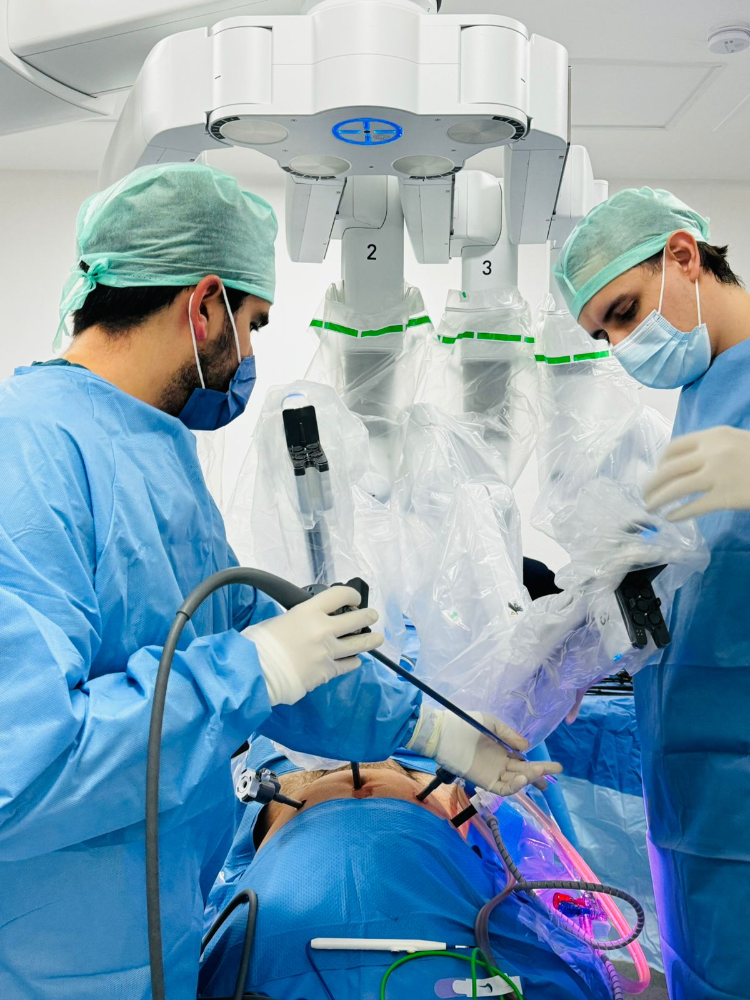
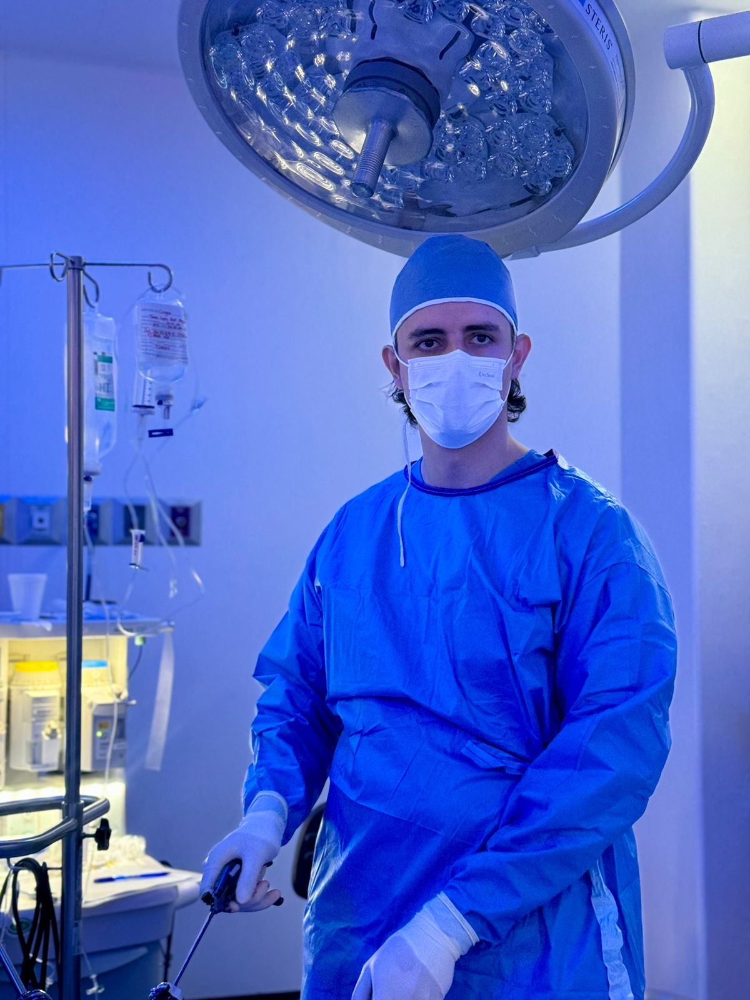
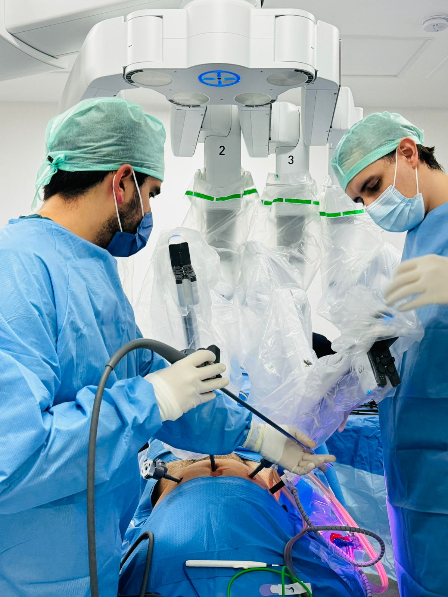
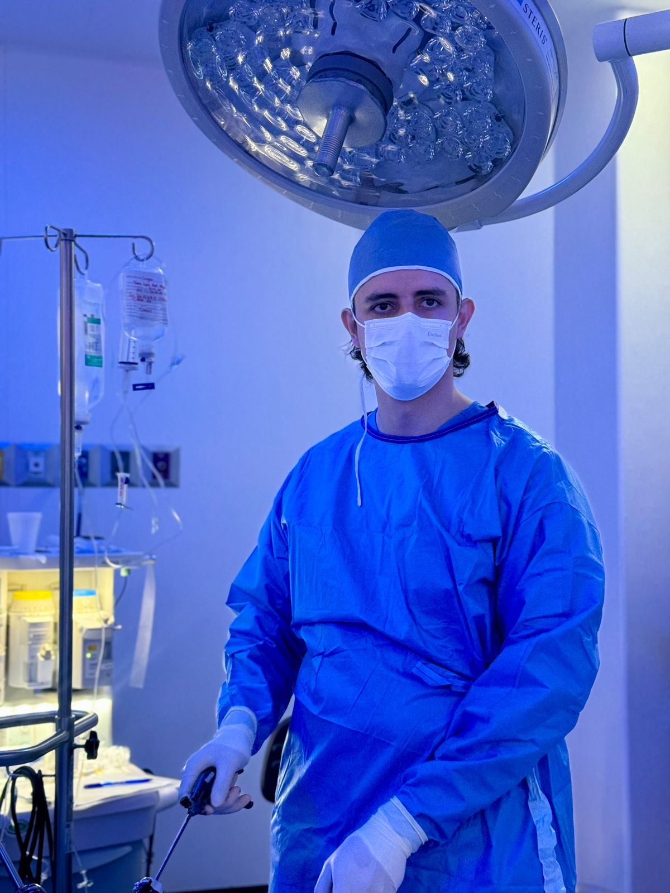
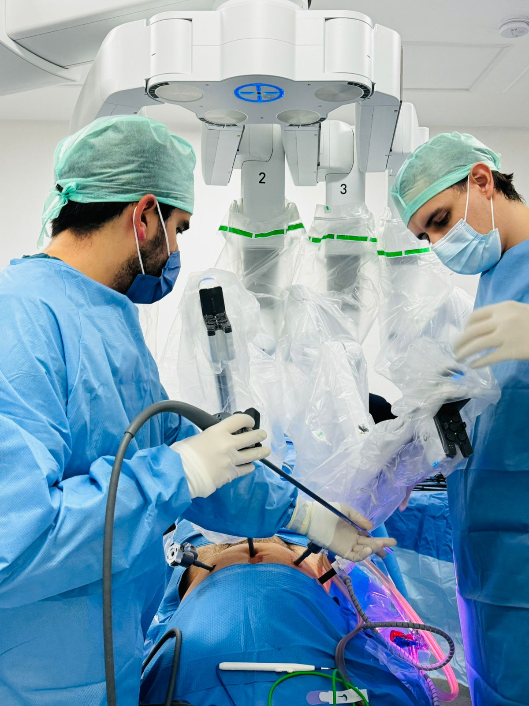
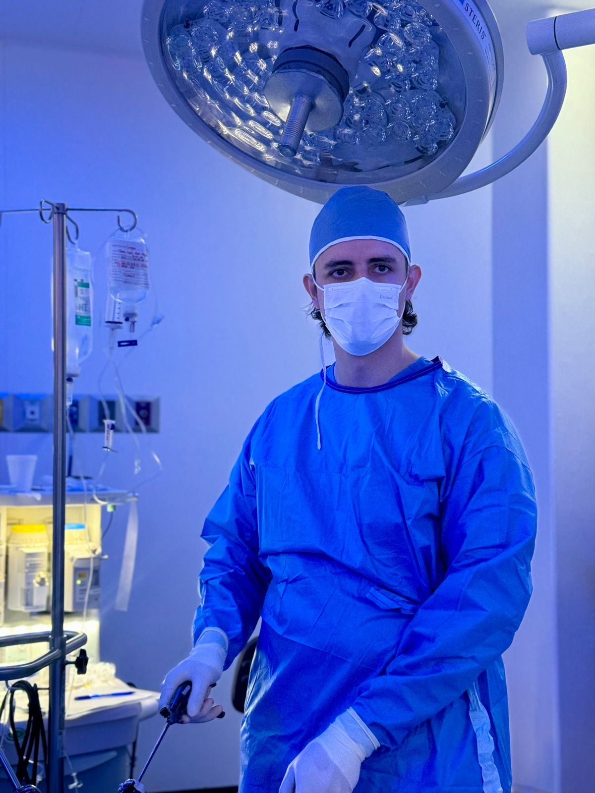

Galería
 



Urología de Precisión · Cirugía Robótica y Laparoscopía
Urólogo con alta especialidad en endourología, laparoscopía y cirugía robótica. Brindo atención en Guadalajara y Arandas, Jalisco. Mi compromiso es ofrecer un tratamiento personalizado, preciso y mínimamente invasivo, siempre con calidad humana.
Cirugía sin cicatrices, dependiendo del padecimiento.


Consultorios:
Hospital San Javier, Torre 2, Piso 5, Consultorio 515, Guadalajara, Jalisco
Calle Martínez Valadez #68 Altos, C.P. 47180, Centro, Arandas, Jalisco
Teléfonos: 3311962152 / 3487832410
Email: drmunozuroprecision@gmail.com
Instagram: @drmunozuroprecision